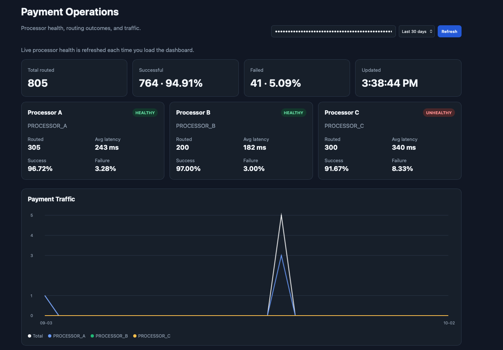

FEATURED PROJECT
01

SmartPay — Payment Orchestration Platform
A multi-processor payment orchestration platform with card tokenization, merchant onboarding, smart routing, processor health and automatic failover.
View on GitHub ↗